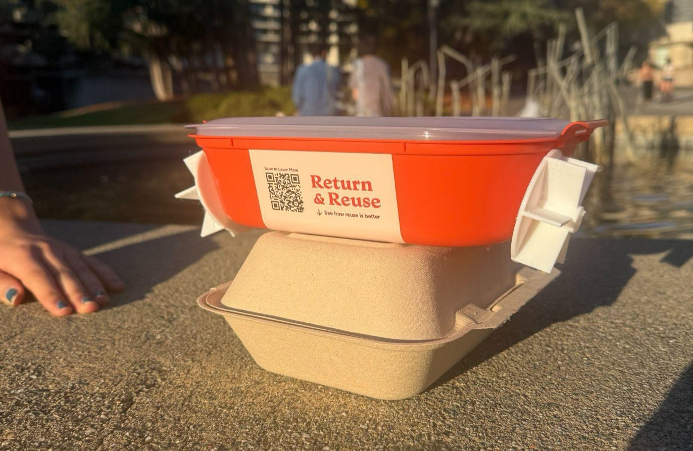
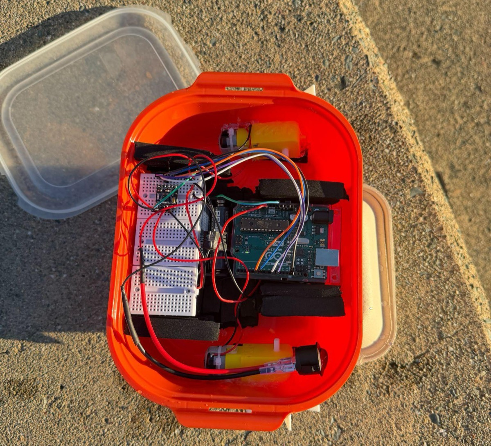
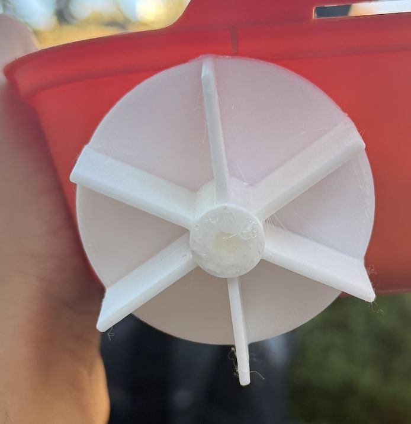
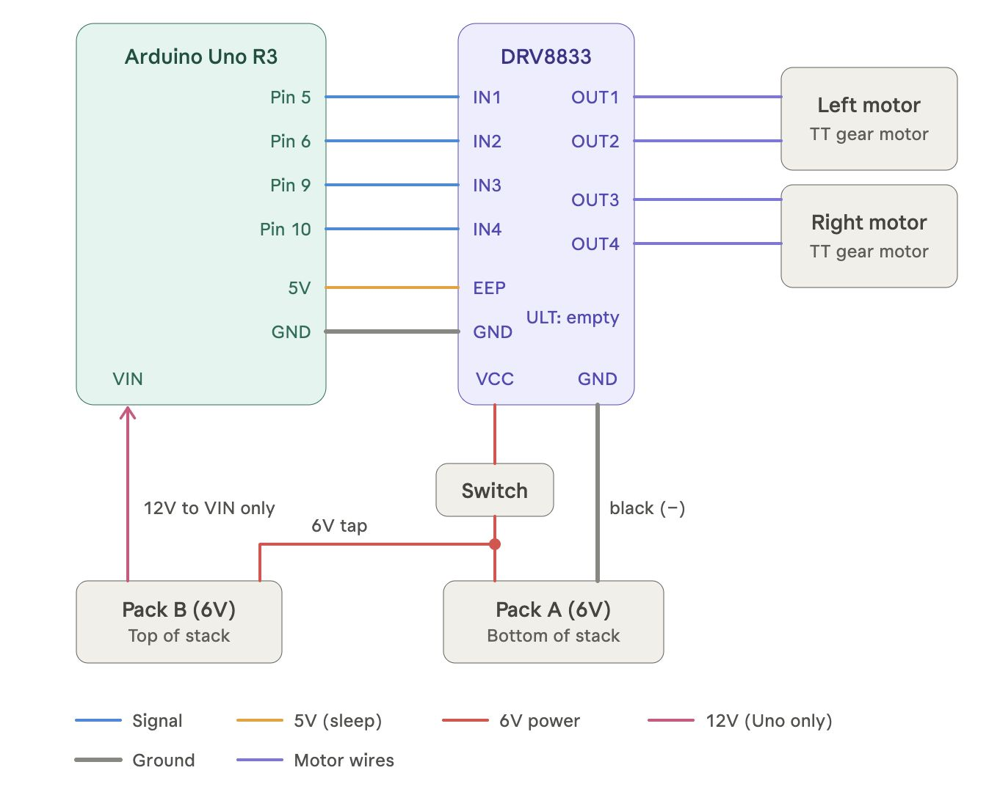

Case Study · Class Project (IB 130)
Whirligig Beetle–Inspired Swimming Robot
A two-motor paddle robot that borrows the fastest-swimming insect’s paired paddles and steering to swim, spin, and zig-zag across open water.

The challenge
IB 130 asked us to take a mechanism from a living organism and carry it into a working engineered device. We chose the whirligig beetle, the fastest-swimming insect. It reaches about 100 body lengths per second and peak accelerations of about 100 m/s², and it can turn and circle almost instantly on the water’s surface.
Our question: can two independently driven paddle wheels reproduce the beetle’s surface swimming and tight turning with a simple, low-cost build?
My role
On a 5-person team:
- Biology research (with one teammate): studied how the beetle swims and turns, and pulled out the traits we could realistically build
- Electronics and testing (whole team): wiring, Arduino setup, and running the bench, leak, float, and water tests
- Presentation (whole team): the final deck and the analogy check between beetle and robot
Teammates led the CAD for the paddle wheels.
What we learned from the beetle
- Lift, not just push: the beetle’s flattened hind legs work like hydrofoils, producing lift-based thrust. That’s the secret to its speed (Sun et al., 2024).
- Paired paddles: its swimming legs sit symmetrically on both sides, so the two sides can work together or separately.
- Steering by imbalance: it turns by paddling harder with its outside legs, which lets it circle and change direction very quickly.
Design decisions (and why)
We copied the beetle’s behavior (what it does and how it steers) and simplified its physics (how it makes thrust). Our analogy check, side by side:
| Category | Whirligig beetle | Our robot | Match |
|---|---|---|---|
| Function | Fast swimming, sharp turns | Surface swimming, spins in place | Similar |
| Steering | Outside legs paddle harder | One motor runs alone or faster | Similar |
| Environment | Ponds | Campus fountain | Similar |
| Structure | Oval body | Rectangular plastic container | Different |
| Propulsion | Folding hind legs, lift-based stroke | Paddle wheels, drag-based push | Different |
| Size | About 1 cm | 21 cm | Different |
Tradeoffs we made:
- Wheels instead of legs. Oscillating legs need careful stroke timing and more motors. Continuously spinning wheels on two motors are simpler, cheaper, and easier to control, while still letting the robot turn and spin.
- Simple over advanced. Earlier beetle robots used flexible paddles with tuned beat patterns (Jia et al., 2015), and researchers note that beetle robots often need many motors and complex controls (Ding et al., 2025). We kept it to two motors and on/off logic.
- A food container for a hull. Light, waterproof, buoyant and roomy enough for the electronics, at the cost of a boxy, non-streamlined shape.
How we built it
- Marked the waterline on the container so the paddle wheels would sit at the right depth.
- Melted shaft holes through the walls with a glue gun.
- Mounted 3D-printed paddle wheels on two TT DC gear motors.
- Secured the Arduino, motor driver, and battery packs inside with foam weatherstrip tape.
- Sealed every shaft hole with silicone to keep water out.


How it works
An Arduino Uno sends signals to a DRV8833 motor driver, which powers each paddle motor separately. Two stacked 4×AA packs supply 12 V to the Arduino and a 6 V tap, through an on/off switch, to the motors.

Running the motors in different combinations gives three swimming patterns, each modeled on how the beetle uses its paddles:
| Pattern | Motors | Beetle behavior | What happened |
|---|---|---|---|
| Forward | Both on | Synchronized paddling | Floated and moved well in a straight line |
| Spin | One on | Circling on the surface | Spun in place |
| Zig-zag | Take turns | Quick alternating turns | Best overall movement, though slower |
Testing
We tested in four stages, each one gating the next: a bench test of the motors and code out of water, a leak test of the sealed shaft holes, a float test with every component loaded, and a full water test of each pattern in the fountain. The robot stayed dry, floated level, and completed all three patterns.
Where it fell short
- Drag vs. lift: our wheels only push water backward. The beetle’s lift-based strokes are faster and more efficient.
- 2 wheels vs. 4 legs: the beetle adjusts four legs every stroke; we control two wheel speeds, so our turns are less precise.
- Shape and scale: a boxy 21 cm hull isn’t a streamlined 1 cm oval, and drag grows with size, so the same idea behaves differently.
What’s next
- Streamline the hull into the beetle’s oval shape
- Add hair-like fringes to the paddles, like the beetle’s legs, for extra thrust
- Remote control, so it can steer around obstacles instead of following a preset path
- A diving mechanism for moving underwater
Sources
- Sun, Y., et al. (2024). Whirligig beetle uses lift-based thrust for fastest insect swimming. Current Biology, 34(1), R12–R15. doi
- Jia, X., et al. (2015). Energy-efficient surface propulsion inspired by whirligig beetles. IEEE Transactions on Robotics, 31(6), 1432–1443. doi
- Ding, J., et al. (2025). The design, modeling, and experiment of a novel diving-beetle-inspired paddling propulsion robot. Biomimetics, 10(3), 182. doi
- Mudryk, K. (2024). A recipe for speed. Nature Physics, 20(2), 181. doi